File: 000450.gt.txt (if the image is defective, simply delete all Arabic text and the line will be excluded)
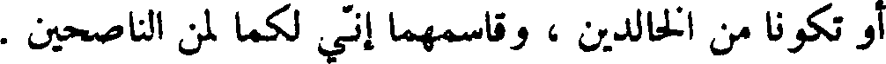
أو تكونا من الخالدين ، وقاسمهما أني لكما لمن الناصحين .
File: 000451.gt.txt (if the image is defective, simply delete all Arabic text and the line will be excluded)
وكان لباس آدم وحواء ثيابا من نور ، فلما ذاقا من الشجرة ، بدت لهما
File: 000452.gt.txt (if the image is defective, simply delete all Arabic text and the line will be excluded)
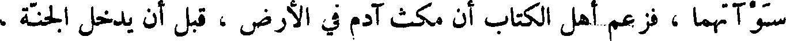
سوآتهما ، فزعم أهل الكتاب أن مكث آدم في الأرض ، قبل أن يدخل الجنة ،
File: 000453.gt.txt (if the image is defective, simply delete all Arabic text and the line will be excluded)
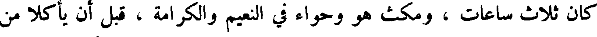
كان ثلاث ساعات ، ومكث هو وحواء في النعيم والكرامة ، قبل أن يأكلا من
File: 000454.gt.txt (if the image is defective, simply delete all Arabic text and the line will be excluded)
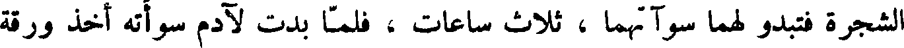
الشجرة فتبدو لهما سوآتهما ، ثلاث ساعات ، فلما بدت لآدم سوأته أخذ ورقة
File: 000455.gt.txt (if the image is defective, simply delete all Arabic text and the line will be excluded)
من الشجرة ، فوضعها على نفسه ، ثم صاح : ها أنا يا رب عريان قد أكلت من
File: 000456.gt.txt (if the image is defective, simply delete all Arabic text and the line will be excluded)
الشجرة التي نهيتني عنها ، فقال الله : ارجع إلى الأرض التي منها خلقت ،
File: 000457.gt.txt (if the image is defective, simply delete all Arabic text and the line will be excluded)
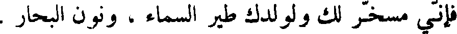
فأني مسخر لك ولولدك طير السماء ، ونون البحار .
File: 000458.gt.txt (if the image is defective, simply delete all Arabic text and the line will be excluded)
وأخرج الله آدم وحواء مما كانا فيه ، فيما يقول أهل الكتاب ، في تسع
File: 000459.gt.txt (if the image is defective, simply delete all Arabic text and the line will be excluded)
ساعات من يوم الجمعة ، وهبطا إلى الأرض ، وهما حزينان باكيان ، وكان
File: 000460.gt.txt (if the image is defective, simply delete all Arabic text and the line will be excluded)
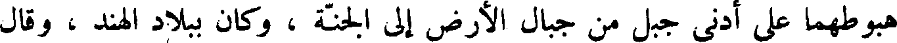
هبوطهما على أدنى جبل من جبال الأرض إلى الجنة ، وكان ببلاد الهند ، وقال
File: 000461.gt.txt (if the image is defective, simply delete all Arabic text and the line will be excluded)
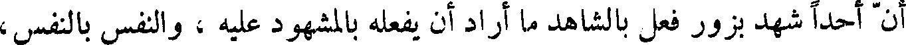
أن أحدا شهد بزور فعل بالشاهد ما أراد أن يفعله بالمشهود عليه ، والنفس بالنفس ،
File: 000462.gt.txt (if the image is defective, simply delete all Arabic text and the line will be excluded)
والعين بالعين ، واليد باليد ، الرجل بالرجل .
File: 000463.gt.txt (if the image is defective, simply delete all Arabic text and the line will be excluded)
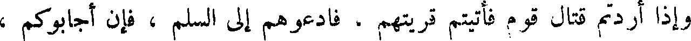
وإذا أردتم قتال قوم فأتيتهم قريتهم ، فادعوهم إلى السلم ، فإن أجابوكم ،
File: 000464.gt.txt (if the image is defective, simply delete all Arabic text and the line will be excluded)
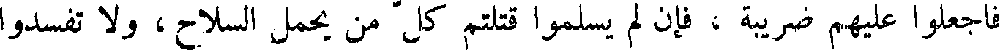
فاجعلوا عليهم ضريبة ، فإن لم يسلموا قتلتم كل من يحمل السلاح ، و لا تفسدوا
File: 000465.gt.txt (if the image is defective, simply delete all Arabic text and the line will be excluded)
شجرها .
File: 000466.gt.txt (if the image is defective, simply delete all Arabic text and the line will be excluded)
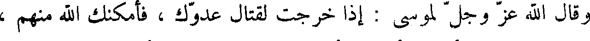
وقال الله عز وجل لموسى : إذا خرجت لقتال عدوك ، فأمكنك الله منهم ،
File: 000467.gt.txt (if the image is defective, simply delete all Arabic text and the line will be excluded)
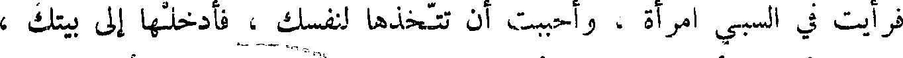
فرأيت في السبي امرأة ، وأحببت أن تتخذها لنفسك ، فأدخلها إلى بيتك ،
File: 000468.gt.txt (if the image is defective, simply delete all Arabic text and the line will be excluded)
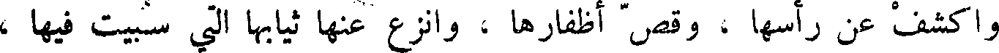
واكشف عن رأسها ، وقص أظفارها ، وانزع عنها ثيابها التي سبيت فيها ،
File: 000469.gt.txt (if the image is defective, simply delete all Arabic text and the line will be excluded)
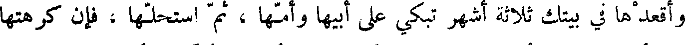
وأقعدها في بيتك ثلاثة اشهر تبكي على أبيها وأمها ، ثم استحلها ، فإن كرهتها
File: 000470.gt.txt (if the image is defective, simply delete all Arabic text and the line will be excluded)
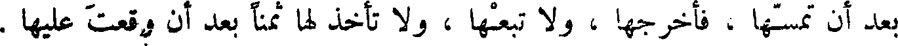
بعد أن تمسها ، فأخرجها ، ولا تبعها ، و لا تأخذ لها ثمنا بعد أن وقعت عليها .
File: 000471.gt.txt (if the image is defective, simply delete all Arabic text and the line will be excluded)
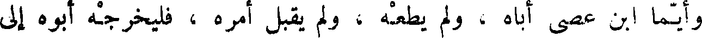
وأيما ابن عصى أباه ، ولم يطعه ، ولم يقبل أمره ، فليخرجه أبوه إلى
File: 000472.gt.txt (if the image is defective, simply delete all Arabic text and the line will be excluded)
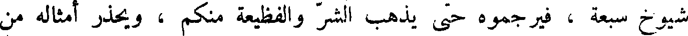
شيوخ سبعة ، فيرجموه حتى يذهب الشر والفظيعة منكم ، ويحذر أمثاله من
File: 000473.gt.txt (if the image is defective, simply delete all Arabic text and the line will be excluded)
بني إسرائيل .
File: 000474.gt.txt (if the image is defective, simply delete all Arabic text and the line will be excluded)
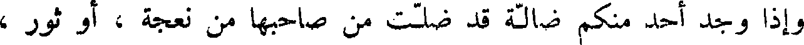
وإذا وجد أحدا منكم ضالة قد ضلت من صاحبها من نعجة ، أو ثور ،
File: 000475.gt.txt (if the image is defective, simply delete all Arabic text and the line will be excluded)
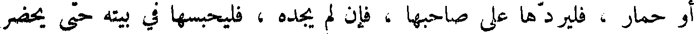
أو حمار ، فليردها على صاحبها ، فإن لم يجده ، فليحبسها في بيته حتى يحضر
File: 000476.gt.txt (if the image is defective, simply delete all Arabic text and the line will be excluded)
صاحبها .
File: 000477.gt.txt (if the image is defective, simply delete all Arabic text and the line will be excluded)
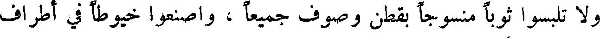
و لا تلبسوا ثوبا منسوجا بقطن وصوف جميعا ، واصنعوا خيوطا في أطراف
File: 000478.gt.txt (if the image is defective, simply delete all Arabic text and the line will be excluded)
أكسيتكم .
File: 000479.gt.txt (if the image is defective, simply delete all Arabic text and the line will be excluded)
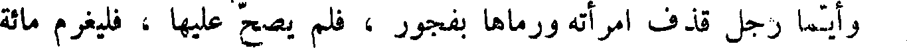
وأيما رجل قذف امرأته ورماها بفجور ، فلم يصح عليها ، فليغرم مائة
To Save: `Ctrl+s`, make sure to choose `Webpage, complete`!